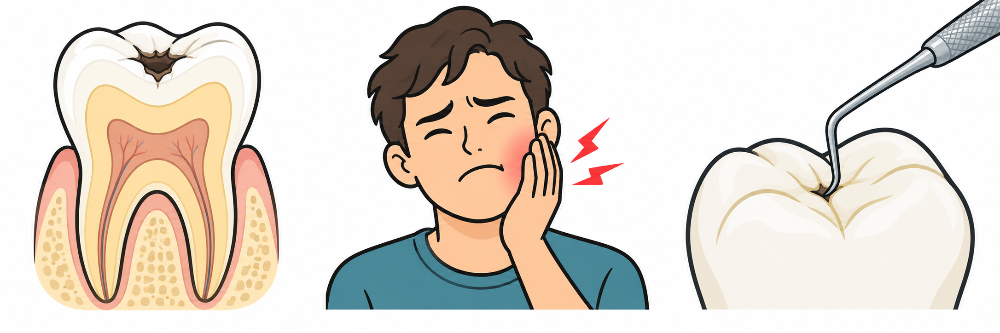
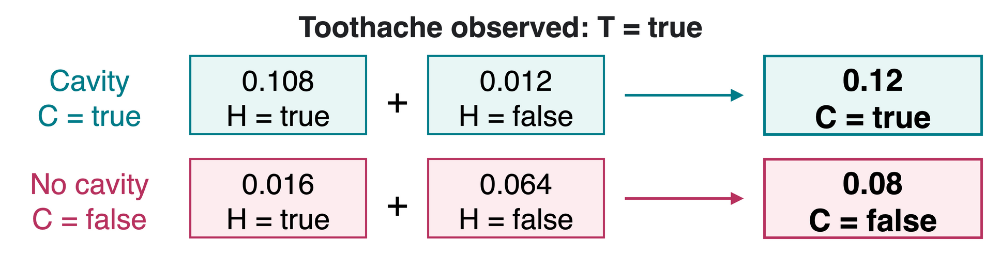
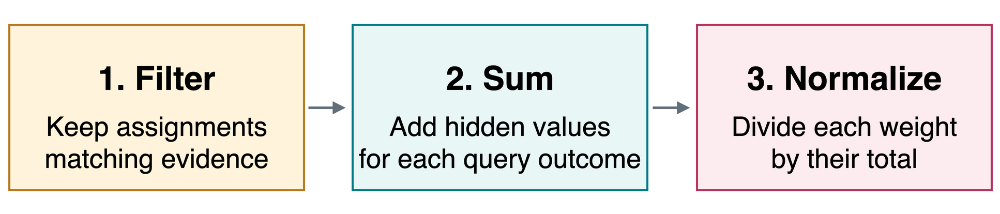
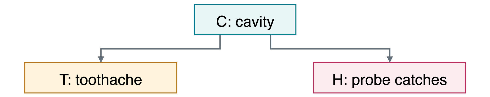

CS 463G & CS 663
Lecture 22: Probabilistic Inference
Fall 2026
The Dental Example, Illustrated

C : Cavity
A small hole caused by decay in a tooth.
T : Toothache
Pain in or around a tooth.
H : Probe catches
A dentist’s pointed tool snags on a rough spot.
Toothache and probe catch are observations, not proof of a cavity.
Read “catches” as “snags” or “gets stuck,” not “finds the tooth.” H records the result of an examination, while T records a symptom. A cavity can exist without either observation, and either observation can occur without a cavity in this simplified probability model. The cartoons illustrate the words, not guaranteed causal relationships or a clinical diagnostic procedure.
The three-part cartoon was generated for this course using OpenAI’s built-in image-generation tool. Its provenance and generation prompt are linked in the visual asset credits.
Inference from an Observation
Someone has a toothache. How likely is a cavity?
Probabilistic inference uses a probability model and observed information to calculate probabilities of unknown quantities.
Query
What we want to find out
Is there a cavity?
Evidence
What we have observed
There is a toothache
Could a toothache have another explanation? What would that mean for our answer?
The answer is a probability under the model. An observation can support an explanation without proving it.
Connect to Lecture 21’s alarm example. Today the model is already supplied: inference computes answers from it, rather than learning its probabilities from data. A probability alone does not choose an action without a cost or utility model.
The dental example is an illustrative AIMA model, not clinical guidance or measured medical reliability. Work through the table slowly enough for students to track the changing denominators. Leave time for the two-evidence exercise, robot practice, and HW4 questions.
[Sources] - AIMA fourth edition, Section 12.3. - UC Berkeley CS 188, Inference: https://inst.eecs.berkeley.edu/~cs188/textbook/bayes-nets/inference.html. [/Sources]
Model Variables and Notation
Each variable is Boolean , or binary: it takes either \text{true} or \text{false} .
C : cavityThe tooth has a cavity
T : toothacheThe person has a toothache
H : probe catchesThe tip of a dentist’s small examining tool gets stuck on the tooth
We use the shorthand C for the event C=\text{true} , and \neg C for C=\text{false} . The same convention applies to T and H .
P(C,T)=P(C\text{ and }T),\qquad P(C\mid T)=\text{probability of }C\text{ given }T.
A comma means that both listed events occur. The vertical bar means given. A probe catch is a separate observation from toothache. The letter H is simply the label used in this course for that observation.
An uppercase letter sometimes names a random variable and sometimes its true event; the shorthand above makes that convention explicit. A distribution over C has two outcomes, true and false.
[Sources] - Supplied Spring 2025 Beamer lecture, toothache example. AIMA Sections 12.2-12.3. [/Sources]
The Full Joint Table
A full joint distribution assigns probability to every complete assignment : one value for each variable.
C 0.108
0.012
0.072
0.008
\neg C 0.016
0.064
0.144
0.576
For example, P(C,T,\neg H)=0.012 : cavity and toothache and no probe catch.
Which entry means toothache and a probe catch, but no cavity?
P(\neg C,T,H)=0.016 . All eight entries are nonnegative and sum to 1 . Individual rows need not sum to 1 .
These are joint probabilities over the whole hypothetical population, not conditional probabilities within a row. There are eight assignments because three Boolean variables have 2^3 combinations. The table’s cavity row totals 0.2 and no-cavity row totals 0.8.
[Sources] - AIMA Section 12.3, toothache/cavity/catch full joint distribution. Values preserved from the supplied Beamer lecture. [/Sources]
Marginalization: Summing Out Variables
Marginalization adds probabilities across all values of variables we do not keep. The result is a marginal distribution over the remaining variables.
C 0.108 0.012 0.072 0.008
\neg C 0.016
0.064
0.144
0.576
To find P(C) , keep the cavity row and add across both values of T and H .
P(C)=0.108+0.012+0.072+0.008=0.20.
No toothache or probe result has been observed, so we include every possibility for them.
The other outcome has P(not C)=0.80, so the marginal distribution over C is (0.20, 0.80). This differs from conditioning: we have added all possibilities rather than retaining just an observed value. For a finite joint table, summing out is ordinary addition over mutually exclusive assignments.
The optional complement check from the original lecture is P(C or T)=1-(0.144+0.576)=0.28. It is not needed for the main conditional-inference calculation.
[Sources] - AIMA Section 12.3. [/Sources]
Query, Evidence, and Hidden Variables
We want the cavity probability given a toothache: P(C\mid T) .
Query
Cavity C
Keep its true and false outcomes separate
Evidence
Toothache T
Fix it to the observed value, true
Hidden
Probe catch H
Add over both possible values
A hidden variable is in the model but is neither queried nor observed.
We did not observe a probe result. Would setting H=\text{false} still answer our question?
No. That adds an observation we do not have and changes the question to P(C\mid T,\neg H) .
Variable roles depend on the query, not on permanent labels in the model. H becomes evidence if a probe result is observed. If the query were P(H given C), H would be the query, C evidence, and T hidden.
[Sources] - UC Berkeley CS 188, Inference by Enumeration. [/Sources]
Step 1: Filter by the Evidence
Filtering keeps only complete assignments that match what we observed. Here, T=\text{true} .
true
true
0.108
true
false
0.012
false
true
0.016
false
false
0.064
The four assignments with T=\text{false} do not match the evidence.
The retained entries sum to P(T)=0.20 . They are still joint probabilities. We have not rescaled them yet.
Filtering here means selecting rows of a joint table. It is not the separate time-series filtering problem discussed in temporal models. If the original table is laid out as two rows and four columns, this operation keeps its two toothache columns. The long-form table here lists the four surviving assignments explicitly.
[Sources] - AIMA Section 12.3. UC Berkeley CS 188, Inference by Enumeration. [/Sources]
Step 2: Sum the Hidden Values
Add the two probe possibilities separately for each cavity outcome .

Each total is an unnormalized weight : a nonnegative value before rescaling to sum to 1 .
w_C=P(C,T)=0.12,\qquad w_{\neg C}=P(\neg C,T)=0.08.
The hidden variable H has been summed out. Cavity status C remains the query.
These particular weights are joint probabilities with the observed event. Weights in other algorithms can have a different common scale; normalizing still works if they are proportional to the desired probabilities and their sum is positive. The subscripts on w label the true and false cavity outcomes.
[Sources] - AIMA Section 12.3. Original draw.io diagram using the AIMA table entries. [/Sources]
Step 3: Normalize the Weights
Normalization divides each nonnegative weight by the sum of all the weights. Here that sum is P(T)=0.12+0.08=0.20 .
Cavity
0.12
P(C\mid T)=0.12/0.20=0.60
No cavity
0.08
P(\neg C\mid T)=0.08/0.20=0.40
The normalizing constant \alpha is the reciprocal of the total. Multiplying by it gives the same result:
\alpha=\frac{1}{0.20}=5,\qquad \alpha(0.12,0.08)=(0.60,0.40).
The total must be positive. If the evidence has probability 0 in this discrete model, this conditional probability is undefined.
The two conditional probabilities sum to one. Do not divide by the full table’s total of one: after observing a toothache, the relevant total is 0.20. Alpha is not a new probability; its value can exceed one.
Zero-probability evidence may reveal an inadequate model or an input error. It does not justify silently substituting a uniform distribution.
[Sources] - Supplied Beamer lecture, normalization using alpha. AIMA Section 12.3. [/Sources]
Inference by Enumeration
Enumeration means checking possible complete assignments in the model.

For P(C\mid T) , we kept the toothache assignments, summed over the probe result, and divided by 0.20 .
This is exact inference : it computes the model’s probabilities without estimating them from random samples. Its accuracy still depends on the model.
An exact calculation is exact relative to the supplied distribution, even if that distribution is a simplified description of reality. The method extends to multiple query variables: preserve each joint query assignment until the final normalization.
[Sources] - UC Berkeley CS 188, Inference by Enumeration: https://inst.eecs.berkeley.edu/~cs188/textbook/bayes-nets/inference.html. [/Sources]
Two Possible Probe Results
With a toothache, P(C\mid T)=0.60 . Now observe the probe result.
Cavity C
0.108
0.012
No cavity \neg C
0.016
0.064
Compute P(C\mid T,H) and P(C\mid T,\neg H) .
P(C\mid T,H)=\frac{0.108}{0.108+0.016}\approx0.871.
P(C\mid T,\neg H)=\frac{0.012}{0.012+0.064}\approx0.158.
More evidence can raise or lower a particular explanation’s probability.
Allow students to choose the relevant column and write both denominators before revealing the answers. No hidden variable remains once both T and H are observed in this three-variable model. The displayed numbers remain joint masses from the original table, so each selected column must be normalized separately.
[Sources] - AIMA toothache distribution. Two-evidence practice written for this course. [/Sources]
Reversing a Conditional
From the joint table, P(C)=0.20 , P(H)=0.34 , and
P(C,H)=0.108+0.072=0.18.
Probe catches, given cavity
P(H\mid C)=0.18/0.20=0.90
Cavity, given probe catches
P(C\mid H)=0.18/0.34\approx0.529
Why do the answers differ even though the numerator is the same?
The given events differ. Each denominator is the probability of the event after the bar.
P(H)=0.108+0.072+0.016+0.144=0.34. The numerator is the same intersection in both directions, but conditioning selects different reference populations. This connects directly to Bayes’ rule from Lecture 21.
[Sources] - AIMA Sections 12.3 and 12.5. [/Sources]
Marginal Independence
Marginal independence is ordinary independence : learning one variable leaves the other’s distribution unchanged, without conditioning on a third variable.
Let X and Y be the results of two fair coin tosses. Our model gives:
heads
0.25
0.25
0.50
tails
0.25
0.25
0.50
Marginal P(Y)
0.50 0.50 1.00
P(X=\text{heads}\mid Y=\text{heads})=\frac{0.25}{0.50}=0.50.
The first toss stays 50% heads after learning the second result. Every joint cell also equals the product of its two marginals: 0.25=0.50(0.50) .
The right column and bottom row contain marginal probabilities, obtained by summing over the other toss. The bottom-right 1.00 is the total probability, not an additional outcome. The four inner cells form the full joint distribution of X and Y.
The supplied joint table is the modeling assumption: fairness alone does not imply independence of two tosses. All four pairs have probability one quarter here. Check factorization for every pair, or equivalently note that conditioning on either possible second result leaves the first toss’s full distribution unchanged. The same statement holds with the two tosses interchanged.
Marginal independence is ordinary independence. The qualifier marginal emphasizes the contrast with conditional independence, rather than naming a different notion. It describes X and Y without conditioning on a third variable. The next slide returns to the dental example to introduce independence within a known group. These are different models; the coin example does not claim that the dental observations are marginally independent.
[Sources] - AIMA Section 12.4, independence. Original fair-coin example and joint table. [/Sources]
Conditional Independence
Back to the toothache model: conditional independence means that, once cavity status is known, learning the probe result gives no further information about toothache.
Cavity
0.60
0.90
0.54=0.60(0.90)
No cavity
0.10
0.20
0.02=0.10(0.20)
The joint probability equals the product within each group .
We write T\perp H\mid C : \perp means independent, and \mid C means given cavity status, for both values of C .
Here C after the bar names the conditioning random variable, not only its true event. The condition holds for both its true and false groups. In the cavity group, P(T,H|C)=0.108/0.20=0.54. In the no-cavity group, 0.016/0.80=0.02. Checking the true-true cell together with the two Boolean marginals establishes factorization for all four T,H outcomes in each group.
This is a property of this toy distribution, not a universal claim about dental observations. Marginal dependence and conditional independence can coexist because mixing different cavity-status groups creates a dependence.
[Sources] - AIMA Section 12.5.2, combining evidence using conditional independence. [/Sources]
Compact Probability Models
A full table for n binary variables has 2^n entries: each new variable doubles its size. At n=50 , that is about 10^{15} entries.
A Bayesian network is a graph of variables with local probability tables. Arrows identify the variables each local probability conditions on.

Factorization writes the joint as a product of smaller distributions:
P(C,T,H)=P(C)P(T\mid C)P(H\mid C).
Conditional independence makes this model compact. Exact inference can still be expensive in larger networks.
In the graph, a node represents a random variable. An arrow identifies a variable used in the target’s local conditional probability. This is a preview; the next lecture defines the graph rules and tables in detail. Graph structure by itself is not proof of causation.
A general chain rule gives P(C,T,H)=P(C)P(T|C)P(H|C,T). The conditional-independence property lets us replace the last factor with P(H|C). For example, 0.20 times 0.60 times 0.90 reproduces 0.108. A full binary table has 2^n entries but only 2^n-1 independent free probabilities because they sum to one.
[Sources] - Supplied Beamer lecture, full-joint storage growth. AIMA Sections 13.1-13.2. [/Sources]
Takeaways
Identify the query, observed evidence, and hidden variables.
Filter by evidence, sum hidden values, then normalize.
Unknown does not mean false. Keep query outcomes separate.
Divide by the evidence probability, which must be positive.
Check independence before replacing a joint probability with a product.
Conditional independence can make a model smaller.
Before calculating, say what is known, what is unknown, and which probability belongs in the denominator.
Asset credits
Leave time for questions on the robot exercise or HW4. The next lecture develops Bayesian networks and introduces sampling when exact inference is expensive.
[Sources] - AIMA fourth edition, Sections 12.3-12.5 and 13.1-13.2. [/Sources]